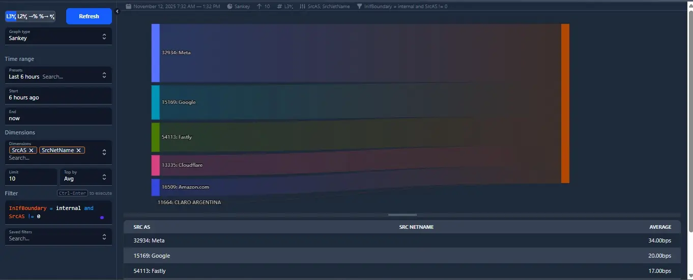
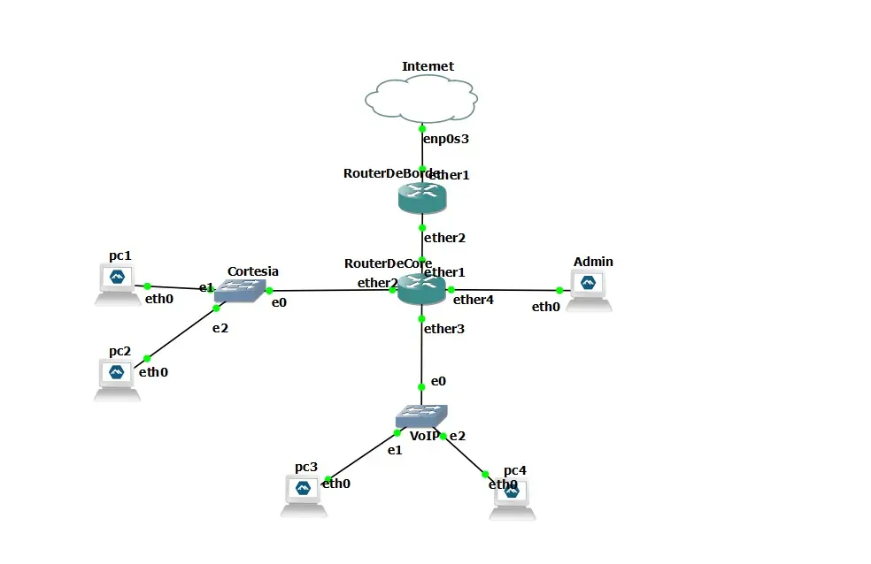

Visibilidad de Flujos
con Akvorado
Despliegue de una plataforma centralizada de recolección y análisis de NetFlow/sFlow utilizando ClickHouse para el almacenamiento masivo y auditoría de tráfico en topologías virtuales.

¿Hacia dónde va el tráfico? La ceguera de los contadores de paquetes
Saber que una interfaz está al 95% de su capacidad nominal permite identificar un cuello de botella, pero no responde a las preguntas operativas fundamentales: ¿quién está consumiendo ese ancho de banda?, ¿qué protocolos se están utilizando?, ¿cuál es el sistema autónomo de destino?
Las herramientas tradicionales de análisis de flujos suelen ser privativas, costosas o incapaces de escalar eficientemente cuando el volumen de paquetes exportados por NetFlow o sFlow es masivo. El problema radicaba en desplegar una solución robusta de código abierto en un entorno Debian simulado que permitiera desglosar y persistir millones de flujos sin degradar el rendimiento del servidor de monitoreo.

Orquestación analítica orientada a datos
Para resolver el desafío se estructuró un flujo de trabajo que garantizara el aprovisionamiento correcto de los servicios y la exportación de flujos desde los enrutadores virtuales:
-
01Preparación del Host DebianConfiguración del sistema base en una máquina virtual limpia, asignando los recursos e interfaces de red necesarias para interceptar los datos de GNS3.
-
02Orquestación de la Arquitectura AkvoradoDespliegue mediante Docker del stack completo: el colector (Inlet), la base de datos columnar ClickHouse (ideal para series temporales masivas) y la consola web (Frontend).
-
03Configuración de Exportadores (NetFlow/sFlow)Instrumentación de las directivas de exportación en los nodos de la topología virtual, apuntando los flujos hacia el puerto UDP del colector de Akvorado.
-
04Clasificación de Tráfico y Reglas GeoIPAjuste de los esquemas de metadatos de Akvorado para resolver direcciones lógicas locales e indexar correctamente el tráfico por aplicaciones conocidas.
Auditoría forense de la red al instante
El despliegue demostró la inmensa ventaja de las bases de datos columnares para la analítica de infraestructura. Akvorado permitió identificar de forma inmediata qué nodos generaban mayor volumen de conexiones entrantes/salientes y aislar patrones sospechosos de tráfico simulado en tiempo real. Este entorno sienta las bases operativas para realizar diagnósticos avanzados de capacidad y auditorías de seguridad sobre cualquier topología compleja.
Archivos de configuración
Explorá el archivo akvorado.yaml personalizado y el manifiesto de contenedores usado para el despliegue en Debian.